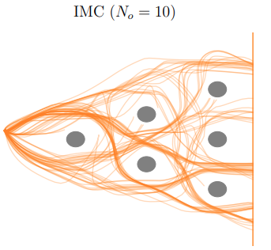

|
I am a PhD student in the Autonomous Learning Robots (ALR) at the Karlsruhe Institute of Technology (KIT), Germany. My research focuses on robotics and machine learning supervised by Gerhard Neumann and Rudolf Lioutikov. Email / CV / Google Scholar / Github / |
|
My primary research goal is to build intelligent embodied agents that assist people in their everyday lives and communicate intuitively. One of the key challenges to be solved towards this goal is learning from multimodal, uncurated human demonstrations without rewards. Therefore, I am working on novel methods that exploit multimodality and learn versatile behaviour. Representative papers are highlighted. |

Xiaogang Jia, Denis Blessing, Xinkai Jiang, Moritz Reuss, Atalay Donat, Rudolf Lioutikov , Gerhard Neumann ICLR 2024 OpenReview Introducing D3IL, a novel set of simulation benchmark environments and datasets tailored for Imitation Learning, D3IL is uniquely designed to challenge and evaluate AI models on their ability to learn and replicate diverse, multi-modal human behaviors. Our environments encompass multiple sub-tasks and object manipulations, providing a rich diversity in behavioral data, a feature often lacking in other datasets. We also introduce practical metrics to effectively quantify a model's capacity to capture and reproduce this diversity. Extensive evaluations of state-of-the-art methods on D3IL offer insightful benchmarks, guiding the development of future imitation learning algorithms capable of generalizing complex human behaviors. |

Moritz Reuss, Maximilian Li, Xiaogang Jia, Rudolf Lioutikov Best Paper Award @ Workshop on Learning from Diverse, Offline Data (L-DOD) @ ICRA 2023, Robotics: Science and Systems (RSS), 2023 project page / Code / arXiv We present a novel policy representation, called BESO, for goal-conditioned imitation learning using score-based diffusion models. BESO is able to effectively learn goal-directed, multi-modal behavior from uncurated reward-free offline-data. On several challening benchmarks our method outperforms current policy representation by a wide margin. BESO can also be used as a standard policy for imitation learning and achieves state-of-the-art performance with only 3 denoising steps. |
|

Denis Blessing, Onur Celik, Xiaogang Jia, Moritz Reuss, Maximilian Xiling, Rudolf Lioutikov , Gerhard Neumann Thirty-seventh Conference on Neural Information Processing Systems (NeurIPS) , 2023 arXiv We introduce the Information Maximizing Curriculum method to address mode-averaging in imitation learning by enabling the model to specialize in representable data. This approach is enhanced by a mixture of experts (MoE) policy, each focusing on different data subsets, and employs a unique maximum entropy-based objective for full dataset coverage. |
|
The website is based on the code from source code! |